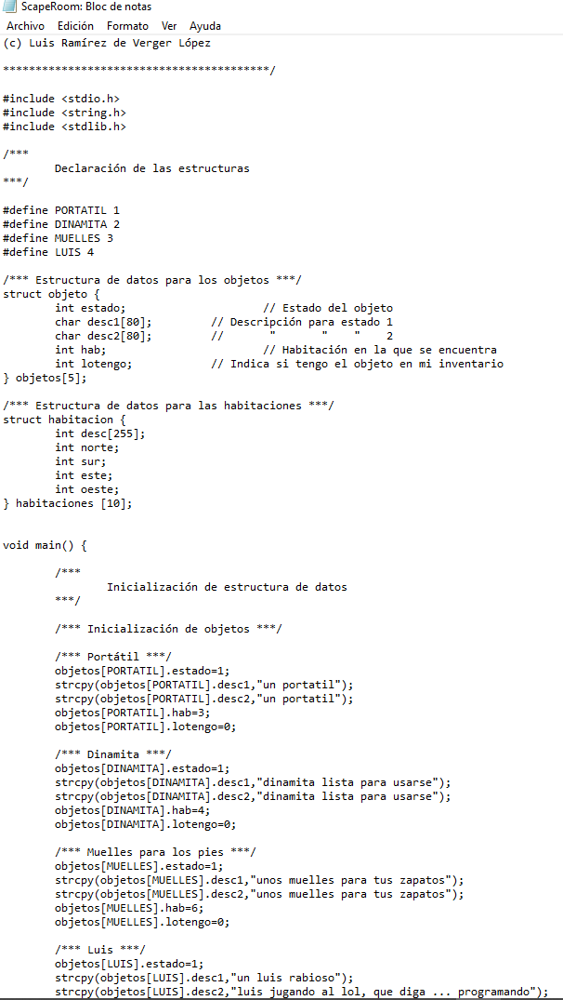

But... Why informatic?
- My family had the first computer when I was 4
- My cousin, actual IT, showed me basics about "CMD" and it was a new world for me
- My childhood wasn't the best, but computers helped me
- To be honest, I just feel attached somehow to technology
Loooong wait...
I had to wait a "bit" untill I could start
- First of all, I was a horrible student, when I had to study something I didn't like, I didn't studied it...
- I did a degree on IT, but in Spain you need experience to start working (and no business gives apprenticite)
- When I was 22, I decided to move to London because in Spain ain't got job in that time.
As I had to work in hospitality, I lost any touch with technology and I started to (fake)feel comfortable because I was having money

ésto no tiene link This is a design I made for (grupo de amigos) and they showed me how to create the scape room